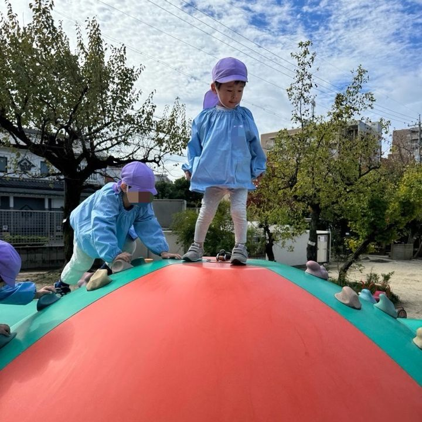
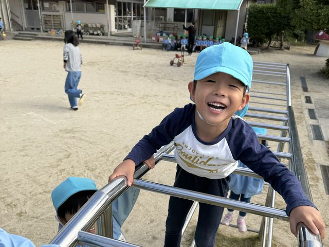

就職を希望する方へ
わかばで、
わかばで、いっしょに働きませんか
わかば幼稚園の先生の一日をご紹介します

わかばで働く魅力
POINT 1
保護者と毎日会える
バス通園ではないので、保護者の方と毎日顔を合わせます。些細な報告もでき、信頼関係を築きやすいです。
POINT 2
子どもと一緒に給食
子どもたちと美味しい給食を食べます！月曜日はお弁当です。
POINT 3
17:30をめどに帰宅
帰宅時間は日によってバラバラですが、17:30をめどに帰宅します。
教員の一日
朝礼まで朝礼までに出勤します！今日の連絡事項を確認し、子ども達を迎える準備をします。
- 8:30朝礼
- 8:45保育
自由作業や外遊び、集団ゲームなど、週案に沿って保育を進めていきます！
子どもたちと美味しい給食を食べます！月曜日はお弁当です。

- 14:00降園
バス通園ではないので、保護者の方と毎日顔を合わせます。
些細な報告もでき、信頼関係を築きやすいです。
降園後の仕事
14:30
- 日録を書く（曜日によって会議や研究会）
- 部屋の掃除
- 明日の準備、保育室の設定
- 週案や、クラスだより（月1）などを思案
16:30終礼
帰宅時間は日によってバラバラですが、17:30をめどに帰宅します。
今日は用事もあるし
早く帰ろっと
少しやりたいことあるから
キリのいいところまで
やって帰ろーっと
わかば幼稚園のことを、もっと知りたい方へ
採用については、お電話でお問い合わせください

学校法人わかば学園わかば幼稚園
〒464-0032 名古屋市千種区猫洞通2丁目13番地
見学は随時受け付けています。
お電話でのお問い合わせ052-782-3651受付時間 平日 9:00〜15:00